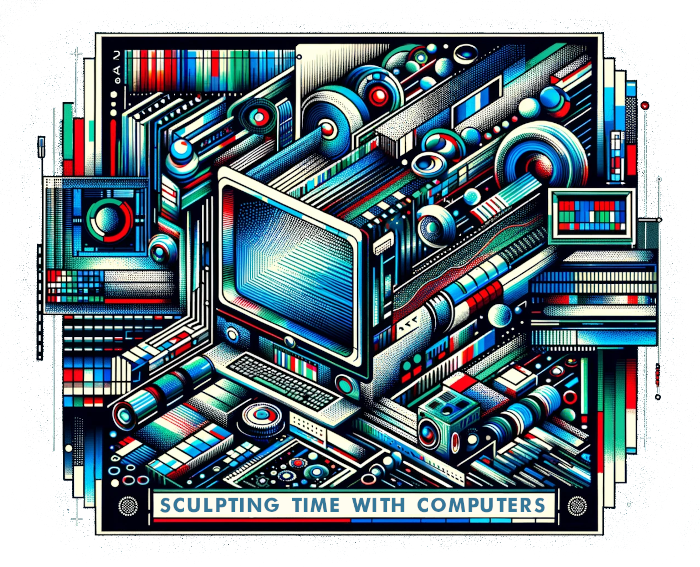

Draft Programme

Day 1: Thursday 23 May, 2024
- 13:00 - 13:10 Welcome and Introduction
- 13:10 - 13:45 Session 1: Three Kinds of Time
- 13:45 - 15:00 Session 2: Widening the Scope
- 15:00 - 15:15 Coffee Break
- 15:15 - 17:00 Session 3: Sculpting Time(s)
Day 2: Friday 24 May, 2024
- 10:00 - 13:00 Morning Sessions
- 10:00 - 11:30 Session 4: Applications
- 11:30 - 11:45 Coffee Break
- 11:45 - 13:00 Session 5: Canvassing the Landscape
- 13:00 - 14:00 Lunch
- 14:00 - 16:00 Afternoon Sessions
- 14:00 - 15:30 Session 6: Frameworks for Collaboration
- 15:30 - 16:00 Closing Remarks and Next Steps